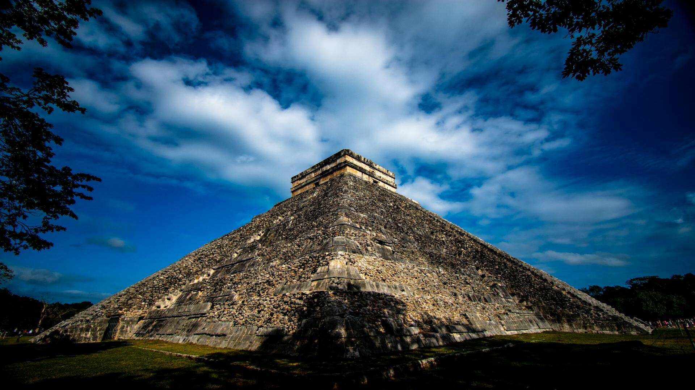
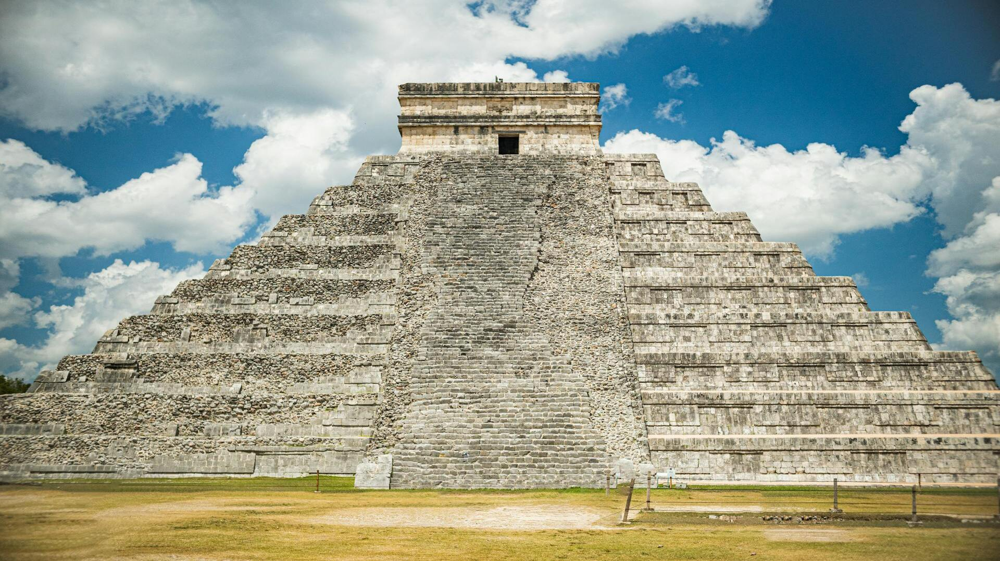
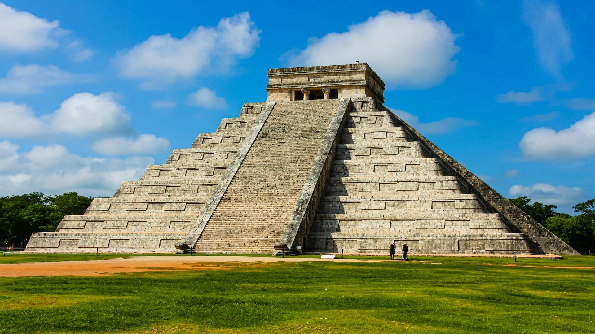

Chichen Itza



Čičen Ica – vienas svarbiausių majų civilizacijos archeologinių objektų. Meksikos Jukatano pusiasalyje esantis Kukulkano piramidė (dar vadinama El Castillo) yra šio komplekso centras. Piramidės dizainas atspindi pažangias astronomines žinias – lygiadienių metu šešėliai sukuria iliuziją, kad gyvatė slysta laiptais. Čičen Ica buvo ne tik religinis, bet ir politinis bei ekonominis centras, klestėjęs VIII–XII amžiuje. Taip pat garsėja Didysis žaidimų aikštynas ir Šventasis cenotas, kuriame buvo atliekamos aukos.